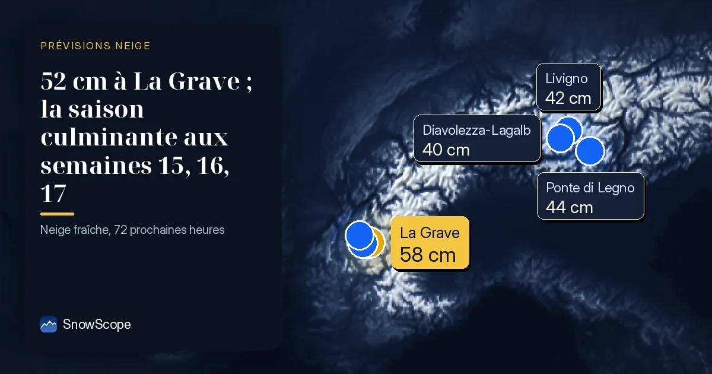
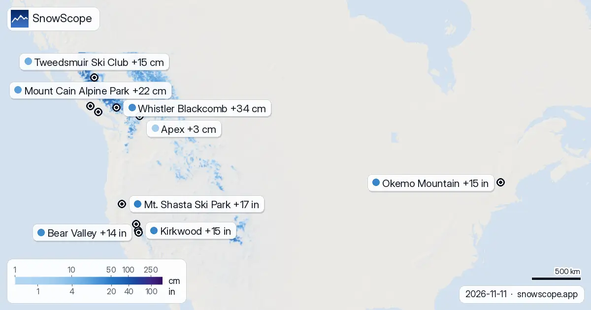

52 cm à La Grave ; la saison culminante aux semaines 15, 16, 17
La Grave recevra environ 52 cm de neige fraîche dans les prochaines 24 heures, le plus de tous les domaines alpins. Ce timing est précoce en saison, mais les données historiques montrent que la neige la plus épaisse à La Grave tombe généralement aux semaines 15, 16 et 17, plusieurs mois plus tard.
Consultez les prévisions neige en temps réel pour La Grave sur l'application SnowScopeHauteurs de neige, alertes poudreuse et carte 3D, gratuitement.
Où la neige alpine se concentre
Dans les Alpes, l'accumulation la plus importante dans les prochaines 24 heures restera aux plus hautes altitudes. La Grave, à 3 543 m, arrive en tête des prévisions avec 52 cm. Les Deux Alpes suit avec 45 cm, tandis que Livigno et Ponte di Legno verront respectivement 40 cm et 38 cm. Diavolezza-Lagalb enregistre 37 cm. Ces sites en haute altitude agissent comme premiers points de capture pour la vapeur d'eau transportée par le système provenant de l'ouest.
D'ici vendredi, la limite de neige à La Grave descendra à environ 2 900 m, ce qui signifie que la majorité de cette accumulation nouvelle tombe sous forme de précipitations gelées au sommet et sur les pentes supérieures. Sous 2 900 m, les précipitations mixtes deviennent plus probables.
| # | Station | Région | +24 h | +72 h | Limite pluie-neige |
|---|---|---|---|---|---|
| 1 | La Grave | Alpes · France | 52 cm | 58 cm | 2 900 m |
| 2 | Les Deux Alpes | Alpes · France | 45 cm | 51 cm | 2 600 m |
| 3 | Ponte di Legno | Alpes · Italie | 38 cm | 44 cm | 2 300 m |
| 4 | Livigno | Alpes · Italie | 40 cm | 42 cm | 2 200 m |
| 5 | Alpe d'Huez Grand Domaine | Alpes · France | 34 cm | 42 cm | 2 500 m |
| 6 | Diavolezza-Lagalb | Alpes · Suisse | 37 cm | 40 cm | 2 300 m |
| 7 | Lagazuoi | Alpes · Italie | 26 cm | 35 cm | 2 200 m |
| 8 | Mölltaler Gletscher | Alpes · Autriche | 17 cm | 35 cm | 2 300 m |
| # | Station | Région | +24 h | +72 h | Limite pluie-neige |
|---|---|---|---|---|---|
| 1 | Mt. Shasta Ski Park | Ouest américain · États-Unis | 0 in (0 cm) | 17 in (43 cm) | 7 200 ft (2 200 m) |
| 2 | Kirkwood | Ouest américain · États-Unis | 0 in (0 cm) | 15 in (39 cm) | 9 200 ft (2 800 m) |
| 3 | Okemo Mountain | Nord-Est américain · États-Unis | 3 in (8 cm) | 15 in (38 cm) | 1 000 ft (300 m) |
| 4 | Bear Valley | Ouest américain · États-Unis | 0 in (0 cm) | 14 in (36 cm) | 8 900 ft (2 700 m) |
| 5 | Boreal | Ouest américain · États-Unis | 0 in (0 cm) | 14 in (36 cm) | 9 500 ft (2 900 m) |
| 6 | Palisades Tahoe Olympic Valley | Ouest américain · États-Unis | 0 in (0 cm) | 14 in (35 cm) | 9 800 ft (3 000 m) |
| 7 | Sierra-at-Tahoe | Ouest américain · États-Unis | 0 in (0 cm) | 13 in (33 cm) | 9 800 ft (3 000 m) |
| 8 | Homewood | Ouest américain · États-Unis | 0 in (0 cm) | 13 in (32 cm) | – |
| # | Station | Région | +24 h | +72 h | Limite pluie-neige |
|---|---|---|---|---|---|
| 1 | Whistler Blackcomb | Ouest canadien · Canada | 16 cm | 34 cm | 2 400 m |
| 2 | Mount Cain Alpine Park | Ouest canadien · Canada | 16 cm | 22 cm | 2 000 m |
| 3 | Tweedsmuir Ski Club | Ouest canadien · Canada | 12 cm | 15 cm | 1 100 m |
| 4 | Mount Washington Alpine Resort | Ouest canadien · Canada | 5 cm | 5 cm | 2 000 m |
| 5 | Apex | Ouest canadien · Canada | 0 cm | 3 cm | 2 900 m |
| 6 | Manning Park Resort | Ouest canadien · Canada | 0 cm | 3 cm | 2 700 m |
| 7 | Mt. Baldy Family | Ouest canadien · Canada | 0 cm | 3 cm | 2 800 m |

Comment la neige précoce constitue le bilan hydrique
Du point de vue de l'hydrologue, chaque chute de neige en novembre ajoute au stockage hydrique de la montagne, même si elle précède de plusieurs mois le pic de saison. En ce moment, La Grave retient 28 cm de neige au sol—environ 60 pour cent de la moyenne à long terme de 47 cm à cette date. Les 52 cm prévus représentent une impulsion marquée : cela doublera approximativement la profondeur hydrique actuellement stockée en haute altitude.
Cependant, cette impulsion reste loin d'être fiable. La neige précoce est fragile. Le vent peut la balayer, le soleil peut ramollir la surface, et beaucoup de centimètres peuvent ne pas survivre jusqu'au printemps. La question pour les gestionnaires des eaux est de savoir quelle part de cet apport de novembre s'intègre au manteau neigeux d'avril plus profond, lorsque les conditions favorisent généralement une accumulation durable.

Quand le stockage hydrique culmine dans les Alpes
L'analyse historique de La Grave montre que la neige la plus fiable et la plus épaisse de la saison arrive aux semaines 15, 16 et 17 du calendrier—mi-avril, mi-avril et fin avril. C'est à ce moment que le schéma saisonnier favorise généralement la neige par rapport à la pluie à ces altitudes, et que les couches fraîches se lient à une base stable en dessous. Pour les domaines skiables et les opérateurs hydroélectriques, cette vision à long terme est essentielle : une chute en novembre est précieuse ; les chutes printanières sont la base.
La prévision actuelle démontre que la neige peut arriver n'importe quel mois. Mais l'année hydrologique—et la saison de ski—est construite sur les tempêtes qui s'empilent couche après couche de mars à mai. Les 52 cm d'aujourd'hui constituent une pierre de fondation pour ces semaines.
La fenêtre de 72 heures
En étendant la prévision jusqu'à vendredi 14 novembre, La Grave montre 58 cm de neige fraîche sur toute la période de 72 heures. Les Deux Alpes atteint 51 cm. Cela représente un apport substantiel aux sommets alpins sur trois jours. Pour comparaison, le même système apporte 43 cm à Mt. Shasta en Californie, et 38 cm à Okemo Mountain au Vermont.
La neige en début de saison à ce volume est significative, mais elle peut aussi être trompeuse. Les couches minces peuvent cacher les rochers, la liaison avec la neige ancienne est incertaine, et le vent peut redistribuer le matériau en quelques heures. Si vous envisagez de skier hors des pentes aménagées après cet événement, le bulletin d'avalanche officiel de votre région devrait être votre première ressource.
Sécurité sur la neige fraîche
La neige fraîche sur les pentes raides en novembre ne s'est pas encore durcie en couches stables. Les pentes exposées nord sont particulièrement sujettes au glissement si la neige nouvelle tombe sur une base mince ou sur la glace. Consultez le bulletin d'avalanche officiel régional avant d'entrer sur tout terrain abrupt hors-piste.
La limite de neige de 2 900 m à La Grave signifie que la plupart des pentes sous ce point verront de la pluie ou des précipitations mixtes, tandis que les pentes au-dessus conserveront de la neige sèche. Les conditions de début de saison récompensent la prudence et le choix de ligne attentif.
Aperçu de la saison de pointe
Les semaines 15, 16 et 17 sont encore à cinq mois. La façon dont cet événement de novembre s'intègre au manteau neigeux printanier dépendra des systèmes météorologiques à venir. Pour l'instant, les 52 cm en 24 heures rappellent que les hautes Alpes commencent leur stockage hydrique tôt, et que chaque tempête construit la base de la saison qui culmine généralement au printemps.
Utilisez l'application SnowScope pour suivre les mises à jour quotidiennes au fur et à mesure que le système évolue et que la prévision s'affine au cours des prochains jours.
Conseils aux skieurs
- Les altitudes les plus hautes retiennent la plus grande neige : visez les pentes au-dessus de 2 900 m à La Grave pour trouver l'accumulation de 52 cm ; les pentes plus basses verront des précipitations mixtes.
- Hors-piste : consultez le bulletin d'avalanche officiel régional avant d'entrer sur un terrain abrupt ; la neige fraîche de novembre ne s'est pas encore liée aux couches plus profondes.
- La neige précoce est fragile : attendez-vous au transport éolien, aux zones dénudées isolées et aux rochers près de la surface ; planifiez votre ligne attentivement.
- Marquez le calendrier : les semaines 15, 16 et 17 (dates d'avril) sont lorsque La Grave retient généralement sa neige la plus épaisse ; cet événement de novembre est une pierre de fondation pour ce pic.
- Consultez les prévisions quotidiennement : 52 cm est l'estimation actuelle pour 24 heures ; les mises à jour du modèle peuvent la réviser au fur et à mesure que le système évolue.
À propos de ces chiffres
Les hauteurs de neige des stations sont la neige la plus épaisse sur le haut du domaine à la date indiquée ; ce sont des estimations pour une zone, pas une mesure en un point. Les prévisions peuvent changer. Consultez toujours le bulletin d'avalanche officiel avant le hors-piste.
Bulletins d'avalanche officiels: EAWS (Europe) · avalanche.org (US) · Avalanche Canada
Citer ce bulletin
Pour la recherche, l'enseignement ou la presse : chiffres et graphiques réutilisables librement sous CC BY 4.0 avec cette citation.
SnowScope (2026), 52 cm à La Grave ; la saison culminante aux semaines 15, 16, 17, https://snowscope.app/blog/fr/2026/11/where-most-snow-falls-next-72-hours-11-november-2026.html, consulté le 2026-11-11
SnowScope (Atlas Labs). (2026, November 11). 52 cm à La Grave ; la saison culminante aux semaines 15, 16, 17. SnowScope snow reports. https://snowscope.app/blog/fr/2026/11/where-most-snow-falls-next-72-hours-11-november-2026.html
BibTeX
@misc{snowscope2026wheremostsnowfallsnext72,
author = {{SnowScope (Atlas Labs)}},
title = {52 cm à La Grave ; la saison culminante aux semaines 15, 16, 17},
year = {2026},
month = nov,
howpublished = {\url{https://snowscope.app/blog/fr/2026/11/where-most-snow-falls-next-72-hours-11-november-2026.html}},
note = {Published 2026-11-11 18:44 UTC; accessed 2026-11-11}
}· CC BY 4.0 · Méthodes, données et outils →
La Grave : neige et température selon l'altitude, cet hiver vs l'hiver dernier (outils) →
Suivre La Grave
Gratuit : un message quand la neige arrive, et la météo chaque matin.